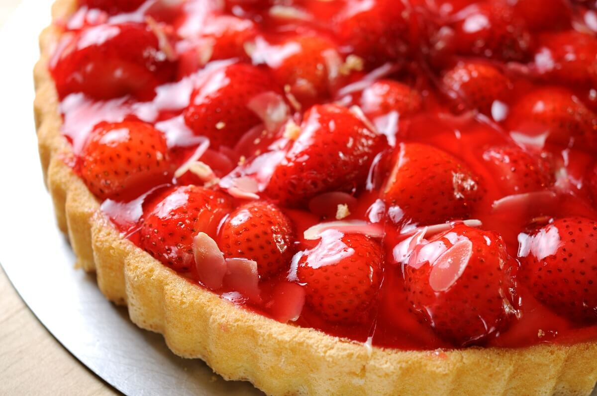

Torta de Morango
Visual deslumbrante: A torta de morango é visualmente deslumbrante! O brilho dos morangos vermelhos e frescos em cima do creme branco vai transformar a sobremesa em uma obra de arte na sua mesa. A aparência é tão irresistível quanto o sabor, e a família vai se encantar com cada fatia.
Clique aqui para descobrir a receita Obrigado pelo seu acesso!